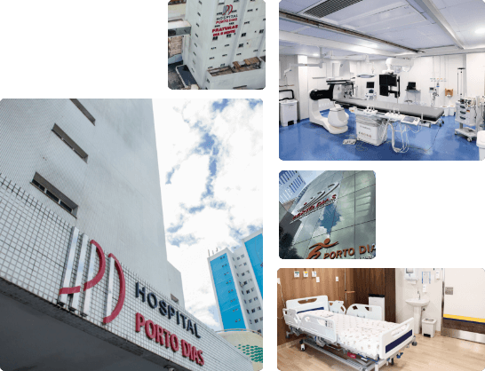

Hospital Porto Dias
Especialidade Principal: Ortopedia, Traumatologia, Neurocirurgia, Neurologia, Cardiologia, Hemodinâmica, Oncologia, Medicina Diagnóstica.
Hospital Digital: Quase todos os processos são integrados e sem papel, garantindo maior segurança nos dados do paciente. Maternidade Porto Dias: Uma unidade de hotelaria premium com foco no parto humanizado e UTI Neonatal de última geração. Heliponto: Vital para o transporte de pacientes graves vindos do interior do estado ou de plataformas de mineração/energia.